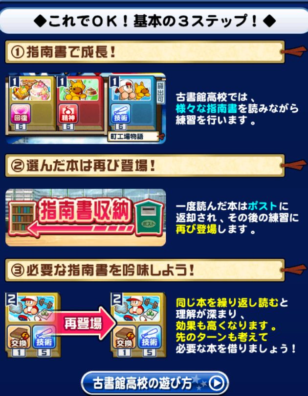
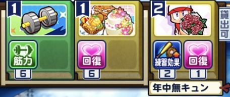
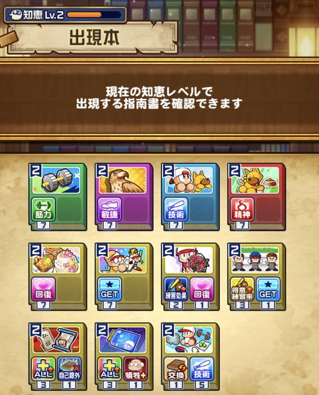
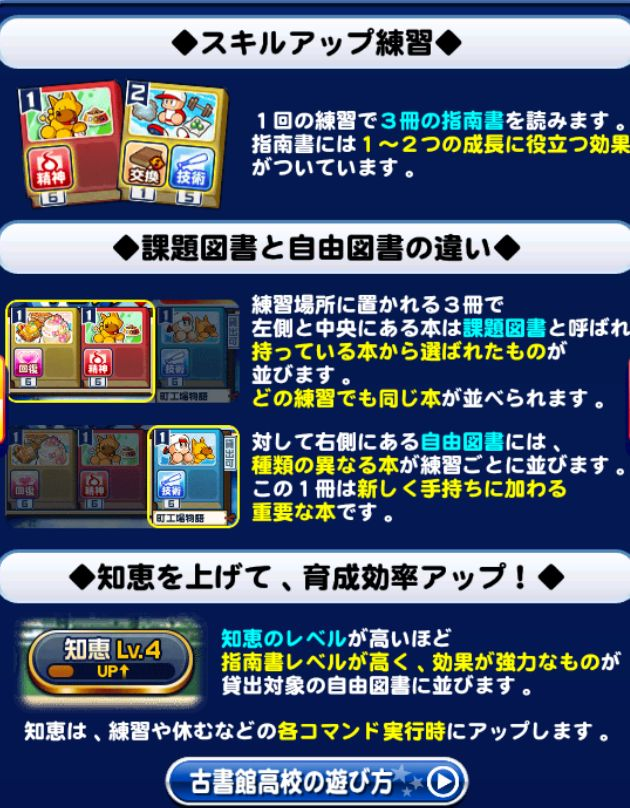
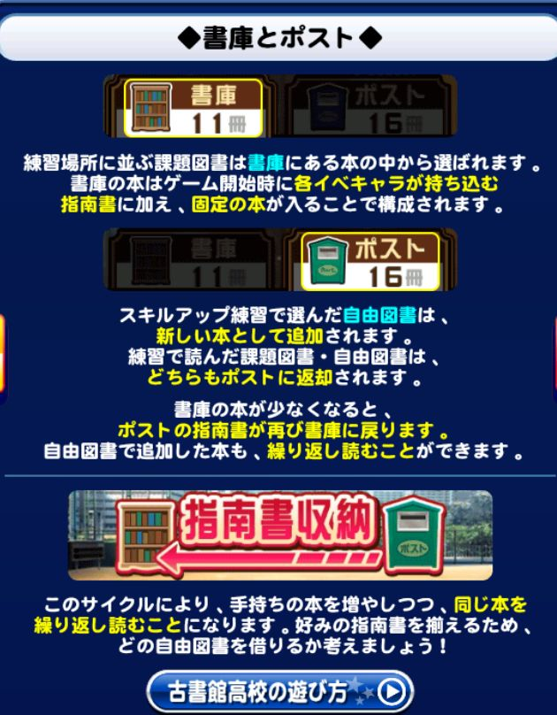
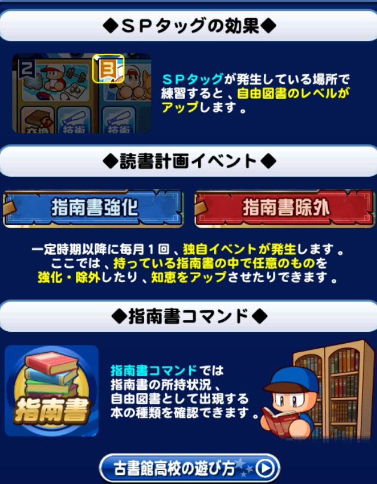

サクセス 古書館高校
ギミック解説
古書館高校のギミック解説をまとめるページです。
※現在、遊び方の解説をまとめたもののみ記載しています。
より詳しいギミック解説は随時更新していきますのでよろしくお願いいたします。
指南書（本）を読んで練習する
古書館高校は、指南書（本）の効果を使って練習するシナリオです。1回の練習で本を3冊読み、本の効果で経験点が増えます。練習を重ねて手持ちの本を増やし、強い本をそろえていくのが基本の流れです。公式では野手育成がおすすめされています。
- 一度読んだ本はポストに返され、あとの練習でまた登場します。
- 同じ本をくり返し読むと理解が深まり、効果も高くなります（Lv1の本がLv2になって再登場します）。先のターンも考えて、必要な本を借りましょう。
- 指南書1冊には、成長に役立つ効果が1〜2個付いています。
- 遊び方の要点は、メイン画面左上の「書庫とポスト」をタップすると確認できます。

1.基本ルール
※カードゲーム風に例えて解説します
- 書庫…自分の山札です。
- 課題図書…自分の山札から2枚カードを引いた状態です。
- 自由図書…場にある別の山札から1枚カードを引いた状態です。練習場所によって異なります。
- ポスト…墓地です。

練習を行うと、基本的に課題図書2枚・自由図書1枚がポストに送られます。これを、書庫がなくなるまで繰り返します。
書庫がなくなったら、ポストから書庫へカードが全て戻ります。
自由図書が出てくる場の山札となる場所は、ゲーム内では「出現本」で確認できます。

課題図書と自由図書
- 練習場所に並ぶ3冊のうち、左の2冊が「課題図書」です。手持ちの本から選ばれ、どの練習場所でも同じ本が並びます。
- 右の1冊が「自由図書」です。練習場所ごとに違う本が並び、練習すると手持ちに加わります。

書庫とポスト
- 課題図書は「書庫」から選ばれ、読んだ本は「ポスト」に返されます。書庫の本が少なくなると、ポストの本が書庫に戻ります。本は書庫とポストを行き来するので、同じ本を何度も読めます。
- 最初の書庫には、メインデッキのイベキャラが1人1冊ずつ本を持ち込みます。持ち込む本は役割で決まり、ガードは筋力、レンジャーは敏捷（投手は変化球）、バウンサーは技術、スナイパーは精神の経験点が増える本、選手以外のキャラは体力回復の本です。

知恵レベル
- 知恵は「指南書を読み解くチカラ」です。
- 練習や休むなど、ターンが進むコマンドや読書計画イベントで「知恵」がたまり、知恵レベル（1〜9）が上がります。
- 知恵レベルが高いほど、並ぶ自由図書の種類が増え、効果も強くなります。今の知恵レベルで出てくる自由図書は、指南書コマンドで確認できます。
経験点を増やすコツ
- 本の経験点の種類と、その練習場所で元からもらえる経験点の種類が同じだと、獲得量が増えます。
- メインデッキの基礎ボーナス・コツイベントボーナスの平均と、練習場所の基礎ボーナス・コツイベントボーナスの合計が高いほど、経験点が増えます。
- SPタッグが起きている練習場所で練習すると、自由図書の指南書レベルが上がります。レベルの高い本を増やしたい時はSPタッグをねらいましょう。
- 書庫とポストの本が増えるほど、経験点も少しずつ増えます。
読書計画イベント
- 一定の時期から毎月1回起き、手持ちの本を整えるか、知恵を上げて強い自由図書をねらうかを選べます（3年目7月1週まで）。
- 選べるのは「指南書強化」「指南書除外」「知恵アップ」の3つから1つです。
指南書コマンド
- 手持ちの指南書（書庫とポストにある本）と、自由図書として出てくる本の種類を確認できます。

古書館高校の攻略ページ